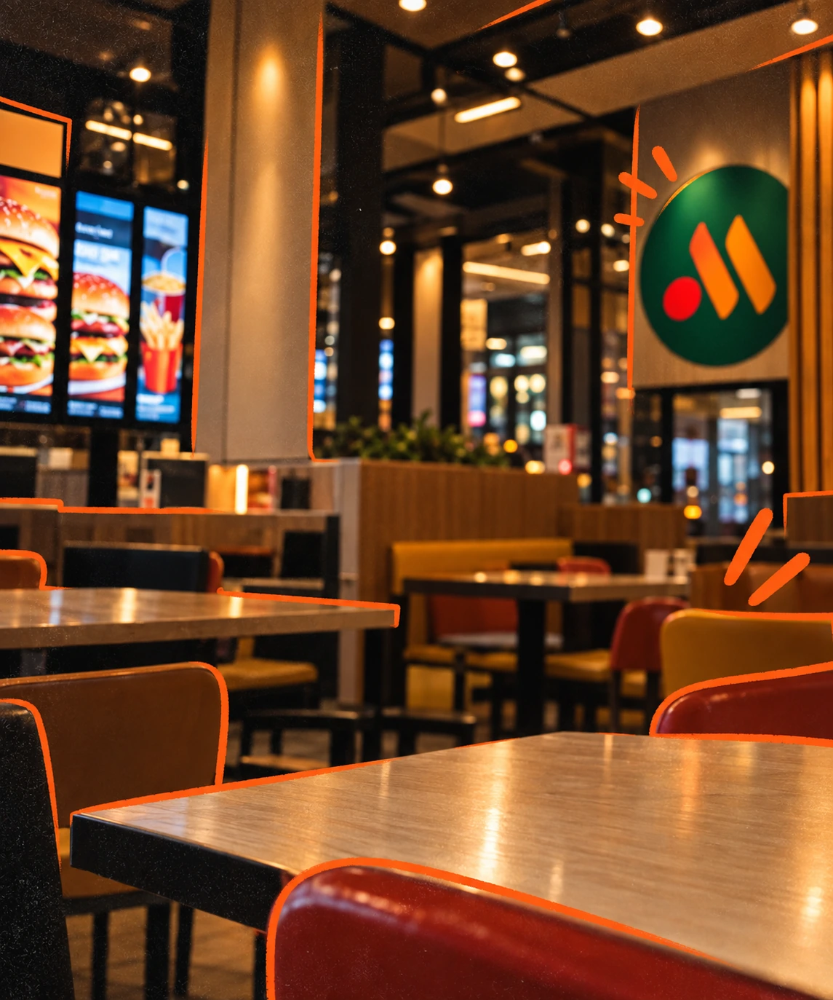
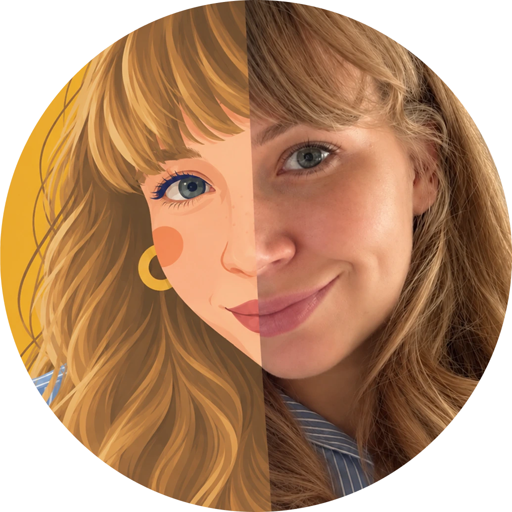
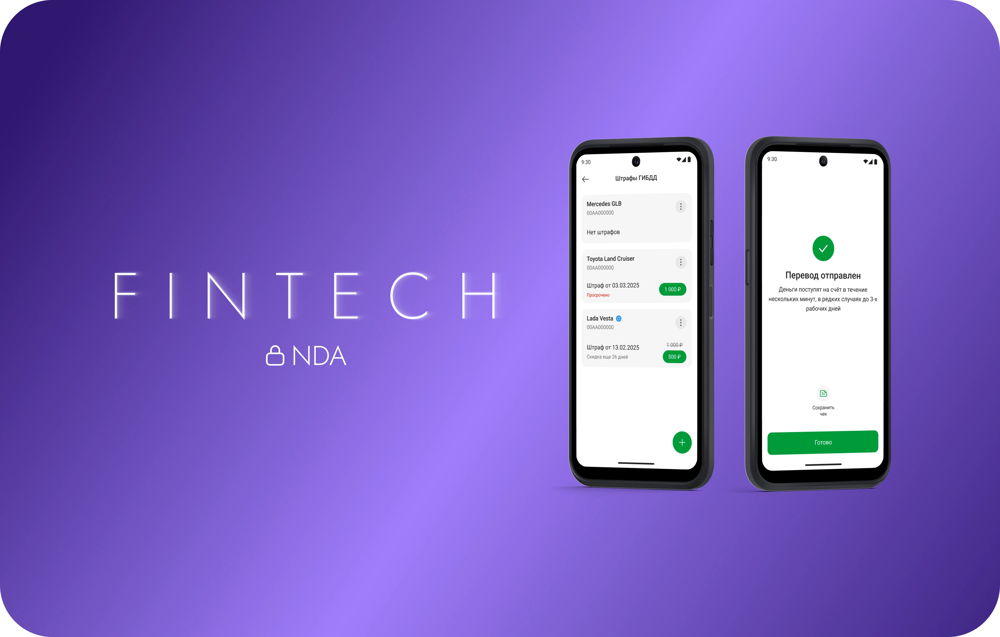
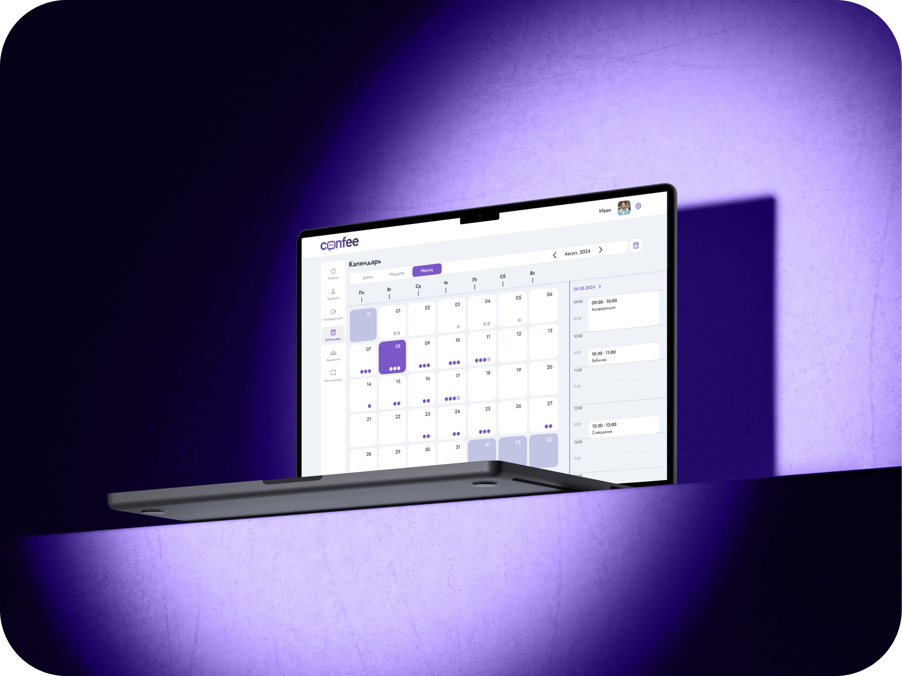
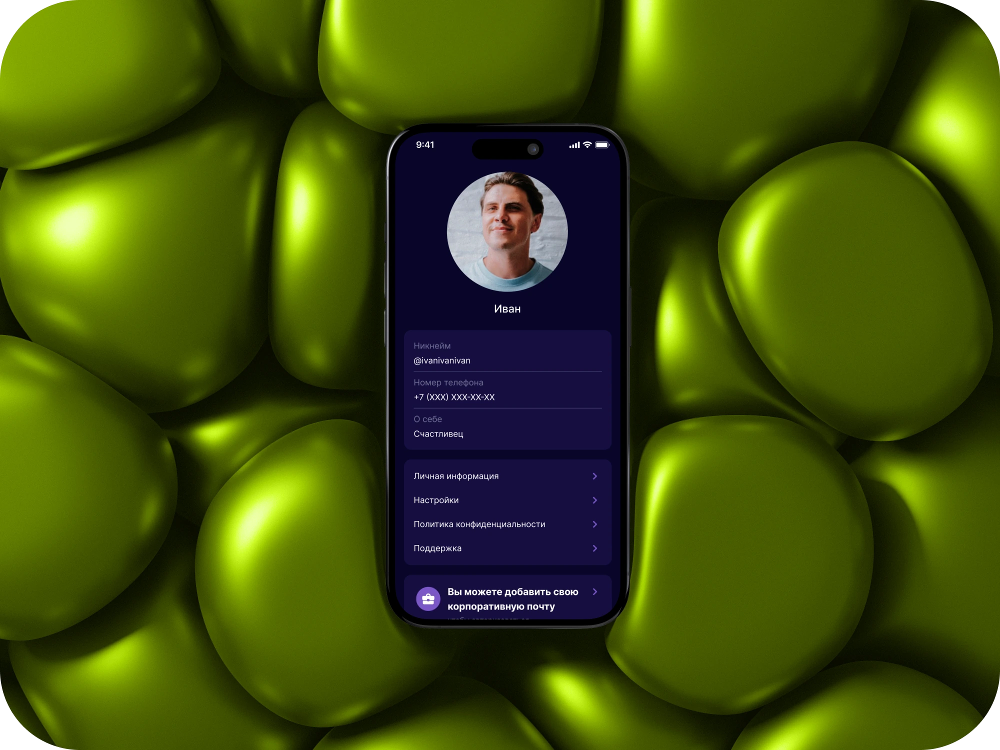

Вкусно — и точка
Мобильная разработка в FoodTech направлении. Разработка и развитие полноценной Дизайн-системы с нуля.
Март 2026 — настоящее времяСмотреть кейс
UX/UI · FinTech · FoodTech
Привет, я Ксения 👋
Проектирую цифровые продукты — от формулирования гипотез до реализации и сопровождения.

Дизайн с вниманием к людямПродукты, над которыми я работала

Мобильная разработка в FoodTech направлении. Разработка и развитие полноценной Дизайн-системы с нуля.

Продуктовая разработка в финтехе: создание цифровых продуктов для ведущего банка Татарстана — Ак Барс Банка.

Комплексное корпоративное пространство для организации и проведения видеовстреч и вебинаров, календарного планирования и управления командой.

Мессенджер даёт возможность в рамках одного приложения разделять личное и рабочее пространства без опасения за конфиденциальность личных данных.
Moneywallet — приложение для учета финансов, которое помогает контролировать доходы и расходы, планировать бюджет и достигать финансовых целей.
5+ лет в продуктовом дизайне
Привет 👋 Я — продуктовый дизайнер с опытом работы более 5 лет в FinTech и FoodTech компаниях, продуктовых командах, B2B, B2C-направлениях и в digital агентствах.
Я готова принять участие в создании продукта любой сложности — от формулирования гипотез до полной реализации и сопровождения на всем жизненном цикле.
Не рассматриваю сферы: Gambling, ставки и букмекерство, оружие, товары двойного назначения с военным использованием, алкогольные и табачные компании.
Подробнее о своём опыте смогу рассказать на интервью.
@kseniiakysh